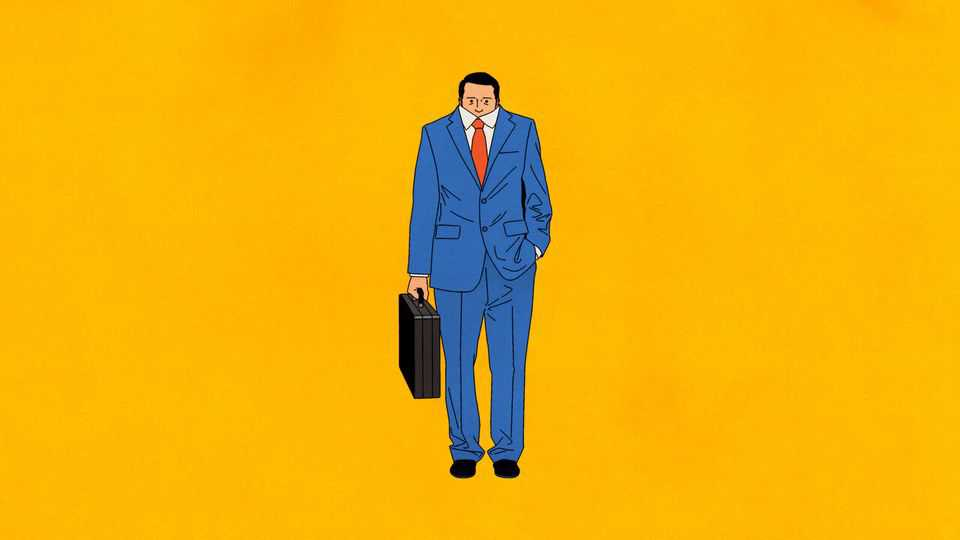

Ignore AI and ask for that pay rise
Fear of a technological revolution may be suppressing wages

Oct 29th 2026
Imagine unwinding after a long day at work by reading about the end of work. A post on Reddit tells you that “The entire point” of artificial intelligence is to “ensure you have zero ability to work for a living”. You visit Blind, an anonymous confessional for anxious tech workers, where employees trade horror stories of two-year job hunts yielding nothing but automated rejections. The best thing you can do, you decide, is to future-proof yourself by mastering the new tools. But then you read that AI is said to have made short work of the Birch and Swinnerton-Dyer conjecture. Time to change job after all? “At this point, it seems easier to get into Harvard than get a new job,” warns another Redditor. Harvard rejected you, so best to stay put. At least your boss likes you.
The doomscrollers are not alone. Across America, workers increasingly fear that AI will take their jobs. Yet for now, the more immediate threat may be to their pay. Average hourly wages in the private sector have risen by just 3% in the past year. Prices have risen faster still, pushing down real wages. That is all the more surprising given productivity is growing healthily, which ought to support pay rather than squeeze it. During the dotcom productivity boom of the late 1990s, for instance, real hourly wages grew by more than 2.5% a year. Some Americans were even cheerful.
Might AI have something to do with it? As the technology takes over more tasks, firms may need fewer workers, weakening demand for labour and holding down wages. Such fears received fresh fuel on October 26th, when Microsoft offered buy-outs to 60,000 employees to contain costs while making gargantuan investments in AI. But evidence of widespread job losses attributable to AI remains thin. Unemployment is low; layoffs are scarce. In a recent survey by the Federal Reserve Bank of New York, just 4% of service firms using AI reported laying off workers in the past six months because of it, while roughly as many reported hiring more workers as hiring less. Researchers at Stanford University, studying payroll records for millions of Americans, have likewise found little evidence of widespread AI-driven displacement.
Even so, fear of AI could still be having an effect, by causing workers to cling to the jobs they have rather than seek new ones. Businesses’ demand for workers remains healthy, judged by job openings. But workers are reluctant to jump ship. The Economist estimates that Americans are quitting 13% less often than job openings and the unemployment rate would predict, based on the pattern of the past 25 years. In professional and business services, a sector filled with AI-exposed jobs, the quit rate is nearly a third lower than in 2019, and almost as low as it was during during the global financial crisis of 2007-09. Wage growth in the sector has tumbled, too. When workers are happy to stay, employers face less pressure to raise pay to keep them.
Consider the reaction to Microsoft’s offer: “Taking a buyout means you may never have a job in tech ever again,” warned one viral post on X. And workers seem more spooked by the prospect of finding another job than by that of losing their current one, making them all the more determined to stay put. A survey by the Boston Fed found that just one worker in ten was concerned about AI-related job losses, but that six in ten expected AI to lead to layoffs in their industries. Another survey in July showed that Americans’ confidence in finding a new job was near a record low, even as they saw little increase in the risk of losing the one they had in the short term.
Research supports the idea that workers are acting on their fears by doing nothing. Economists at the Atlanta Fed examined how workers’ expectations about the labour market affect their decisions to switch jobs. They find that a rise of ten percentage points in the perceived risk of not finding work is associated with roughly 13% fewer job switches, even after accounting for differences among workers and in local labour-market conditions. All told, changing expectations may explain roughly half the decline in job-hopping since 2022.
Economists have long understood that expectations can become self-fulfilling. Bank runs occur when nervous depositors withdraw their money, bringing down the very bank they fear might fail; expectations of inflation can spur spending and wage demands, helping to push up prices. Something similar may be happening in the labour market, though the panic works in reverse. AI anxiety may cause workers to cling to their jobs, leaving employers fewer vacancies to fill—roughly half of job openings come from firms replacing departing workers. This in turn leaves other workers with fewer opportunities, further weakening labour’s bargaining power. Karl Marx wrote of an “industrial reserve army” weighing down the “active labour-army”. Today, the mere spectre of an agentic army may be doing the same.
Still, dismal scientists cannot blame dismal thinking alone. Even if AI isn’t fuelling firings, it does appear to be slowing hiring in some sectors, particularly of young workers. Other factors may also explain workers’ new clinginess. Homeowners paying rock-bottom mortgage rates may be reluctant to move for a new job and a pricier loan. And the Great Resignation of 2021-22, when Americans switched jobs in large numbers, may have left many happily settled with their employers. Not all job-hugging is driven by fear.
Workers may have more power than they think. AI should make them more productive—and more valuable. But they will have to claim their share. The Boston Fed survey found that workers who felt AI had boosted their productivity were more than four times as likely to report willingness to ask for a pay rise. Just as pessimism can sap bargaining power, confidence can strengthen it. Doomscrollers of the world, know your worth! ■